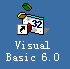
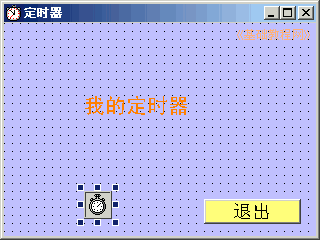
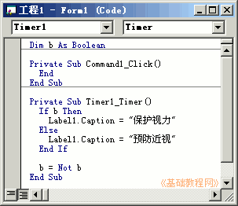
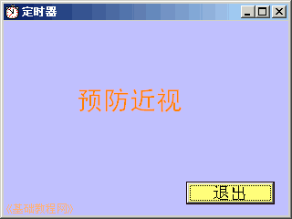

VB程序设计基础
作者：TeliuTe 来源：基础教程网
定时器可以控制代码定时运行，例如屏幕保护程序，下面我们来看一个练习；
1、启动VB
1）双击桌面上的图标，或者点开始菜单，运行VB；

2）在出来的新建窗口中，点“打开”按钮，新建一个标准EXE工程，然后进入主窗口，以 Timer 为文件名保存文件到自己的文件夹；
3）在属性窗口中设置背景色，把标题改为“定时器”，设定Icon图标选项；
2、使用控件
1）在窗体中添加一个标签、一个定时器、一个命令按钮，排列整齐；
修改标题：标签改成“我的定时器”，FillStyle 属性改成透明 2-Transpare ，定时器的Interval 属性改成2000，它的单位是毫秒也就是2秒钟，按钮改成“退出”；

2）保存一下，运行程序看看效果，好像找不着小闹钟，这是因为定时器是在代码中设置的；
3、输入代码
1）进入代码窗口，先输入下面一句代码，定义一个布尔变量 b；
Dim b As Boolean
2）再在左边列表选择定时器 Timer1，输入下面的代码；
Private Sub Timer1_Timer()
If b Then
Label1.Caption = "保护视力"
Else
Label1.Caption = "预防近视"
End If
b = Not b
End Sub
3）if 是判断语句，根据 b 的情况来执行下面两句，如果为真执行第一句，否则执行第二句，然后修改一下 b 的值为相反；

4）再输入退出按钮的代码，保存一下文件，运行程序看看效果；

定时器范例(在弹出的对话框中点“运行、运行”)
本节学习了定时器的使用方法，如果你成功地完成了练习，请继续学习下一课内容；
本教程由86团学校TeliuTe制作|著作权所有
基础教程网：http://teliute.org/
美丽的校园……
转载和引用本站内容，请保留作者和本站链接。